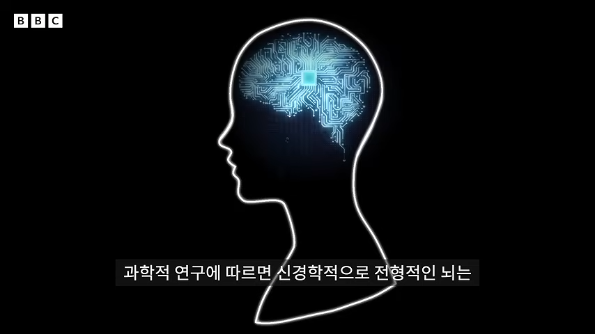
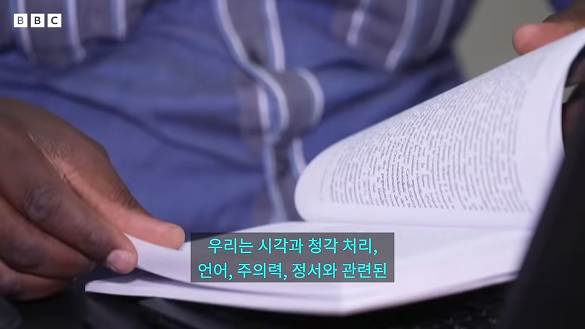
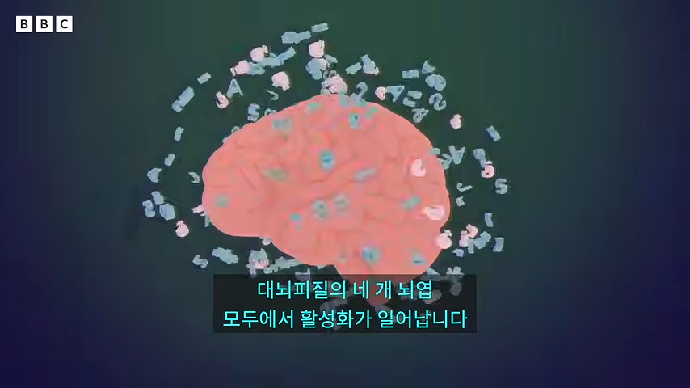
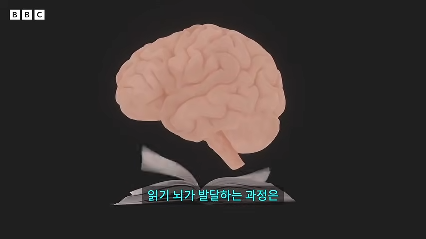
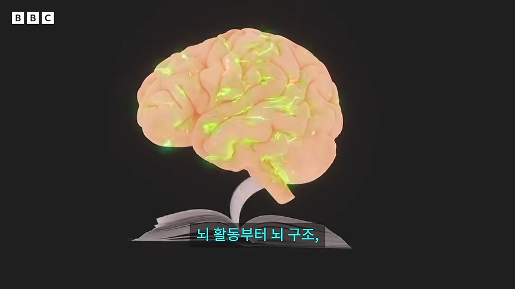
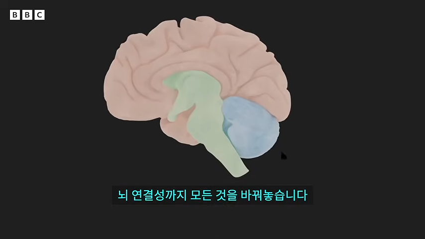
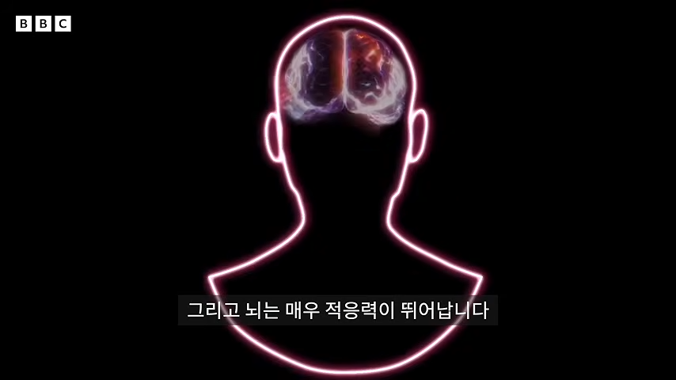
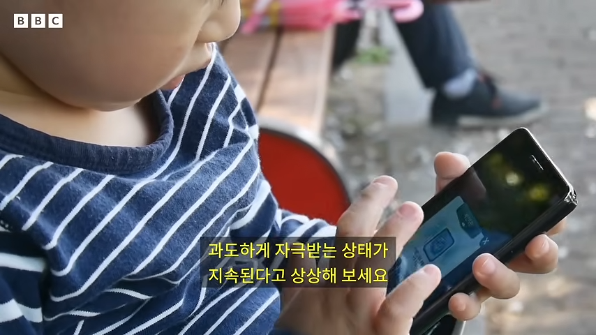
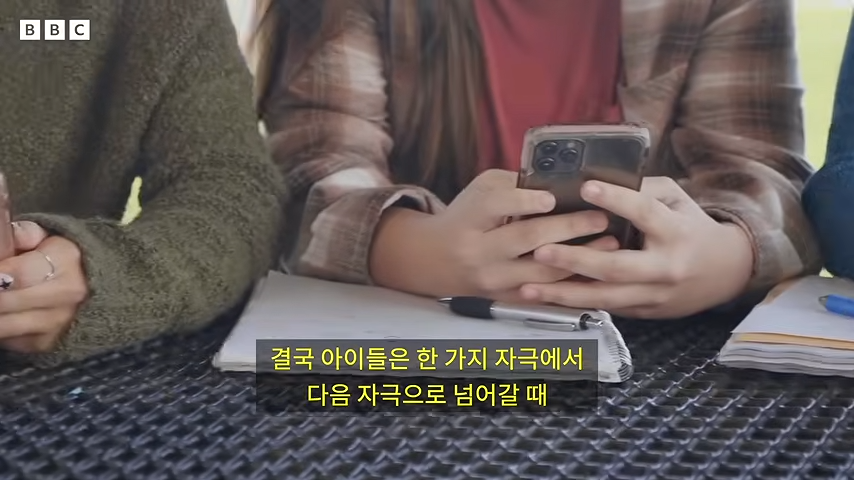

???: 사람들은 글자가 아닌 정보를 읽고 있는 거다
오 라노벨 다 뒤졌따 ㅋㅋ
유부녀 교사가 여고생 제자에게 푹 빠지는 이야기 다읽었는데 라노벨 추천좀
애들 만화책은 잘 읽어
길어서못읽겠는데 누가 세줄요약좀
트럼프가 계엄준비함
그건한줄이잖아
트럼프가
계엄
준비함
세줄요약 굿
읽는것은 자연적으로 습득되는것이 아니며 뇌의 모든부분에 자극을 주는 좋은 활동이다 디지털 스크롤로 하는건 별 도움안됨
요즘 아이들은 어렸을때 부터 디지털 기기 쓴다 그러면 성적 안좋아진다 주의력도 산만해지고 도파민만 쫒고 참을성도 없어진다
그러므로 읽는것을 아이들에게 가르쳐야 하며 너도 같이 읽어서 애들이 보고 배우게 해라
길어서 읽지 않았습니다
너무 좆대로 뇌피셜인거 같은데?
아줌마가 비판적으로 읽으랬어
잘하고 있군
헛소리
세로운 세대탄생임
구세대가 아무리 신세대에거 뭐라고 해봐도 신세대에 맞춰지게 되어있음
나도 그렇게 생각함
ㄹㅇ 다음세대는
풀다이빙은 좋지않으니까 멀리하고 외부자극인 스마트폰을 보라고 ㅈㄹ할듯
건담이냐....???
성대로 '소리를 내는' 것과 '언어를 말하는 것'은 매우 다르고
귀로 '소리를 듣는 것'과 '언어를 듣고 해석하는 것'이 매우 다른데
마치 읽기로 '언어를 해석하는 것'만 그런 것처럼 말을 엉터리로 섞어놨네
그 중 어느 것도 자연적인 것 아닌데
ai강의팔이와 더불어 그때그때 또 스킨갈아끼워서 이런 류 소리 하는 부류도 참...
하긴 엉터리로 떠들어도 10,20%만 맞장구 쳐주면 자리가 생기는데
UCLA 신경과학자보다 똑똑한 개붕이
암, 전두엽 절제술은 노벨상도 받았지
언어는 자연적이 아니라면서 '읽기'만 그렇다는 식으로 말하는 것이 호도일까 아닐까?
정말 모르겠네
매리언 울프 "인지신경학자이자 아동발달학자. 읽는 뇌 분야의 세계적 연구자다. 하버드 교육대학원에서 인간발달 및 심리학 박사학위를 받고 뇌, 언어, 난독증에 대한 인지신경과학과 심리언어학 연구를 시작했다. 현재 UCLA 교육정보대학원에서 설립한 난독증, 다양한 학습자 및 사회정의 센터(Center for Dyslexia, Diverse Learners, and Social Justice) 책임자이며 채프먼 대학교 프레지던셜 펠로(Presidential Fellow)다."
레베카 고트립 "캘리포니아 대학교 로스앤젤레스(UCLA) 교육 및 정보대학원의 조기 연구원으로, 아동 및 청소년의 문해력과 사회 정서적 기능이 뇌 발달과 어떻게 상호 작용하는지 연구하는 학자입니다"
vs
개드립 고렙.
보통 배당률만 보면 후자로 가긴 함 ㅋㅋㅋㅋ
배당률은 모르겠고
나는 영상을 '듣고 보면서'도 울거나 웃는데
아닌 사람은 전자에 배팅하는 것이 맞겠군
아무리 이상한 말을 하더라도 권위에 따라서는 사슴이 말이 될 수 있지 않겠어
나는 네 글을 모두 읽고 해당 내용도 확인해봤는데 네 주장보다는 저 여자의 가설과 주장이 더 옳다고 생각해.
그리고 저 여자의 주장과 가설들을 확인해 보니까 본문의 내용은 좀 많이 축약해놓은 것이더라
교차검증을 해보면서 내게는 실생활에 도움이 되는 지식의 습득의 기회가 되었어
뭔 말을 하고 싶은지는 알겠는데 스킨 갈아끼우기?? 그런 류랑은 다름. 매리언 울프 저 사람은 스마트폰 나오기도 전부터 언어 발달을 뇌과학과 접목시켜서 연구한 사람임. 영상에서는 읽기만 다루긴 하는데 말하기 듣기도 언어 사용 전반에 대해서 언급하기도 하고. 물론 독서를 더 강조하긴 함. 프루스트와 오징어라는 책 읽어봐. 잼써 ㅋㅋ
좀 다른 이야기인데
어째서 같은교육을 받아도 독서 속도가 다를까?
아이들마다 정보를 처리하는 방식이 선천적으로 다른게 아닐까?
같은 커리큘럼을 따라도 달리기속도는 다 다른거랑 다를바 없지에
선천적으로 타고난 능력이 뭐 차이가 있는 것이겠지
사족으로 빨리 읽는 것보다는 읽고 난 후 깊이 사고하는 것이 더 중요하다고 생각해
책 읽으면 머리속에서 영상 재생되는 것 처럼 느껴지는게 뇌 전체를 써서 그런건가
원시인은 맵을 다 외우고다녔어
독서모임에 공유할려고 pdf로 스크랩했는데 이새끼 닉네임때문에 공유가 안됨ㅋㅋㅋㅋㅋㅋ
??? : 저. 여러분. 견지망월이란 말이 있는데요. 그 손가락을 보시면 안되고....
??? : 모임장님. 달을 가르키는 손가락이 뽁큐 손가락인데요?
어릴때 추리, 공포, sf소설들 닥치는대로 읽었는데 어휘력,속독,맞춤법등등 여러곳에 도움이 많이 됐음 독서는 장르나 종류 상관없이 무조건 추천함
비슷한 맥락으로 요즘 20대 초중반들 '살인의 추억' 영화 보라고 하면 지루하다면서 못볼걸?
그냥 뇌피셜 개헛소리 사이비과학
정답
댓글 보소 ㅋㅋㅋ 책 읽으라는 소리가 듣기 싫은 쿨찐들 집합소네
나는 재능이 없어서 못읽었다고 믿었던 개붕이들 댓글창 대폭발 ㄷㄷ
사람들이 책을 많이 사야 돈을 버는 산업이 있거든
계속 이미지로 인식하는거지 글자를 읽는게 아님